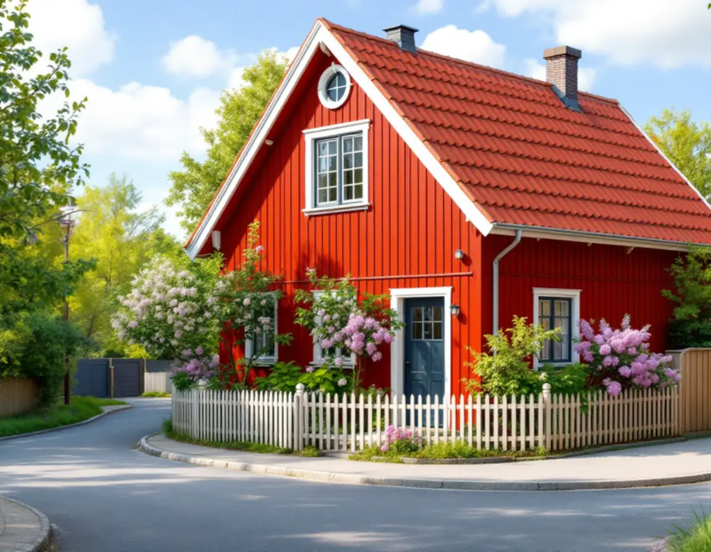
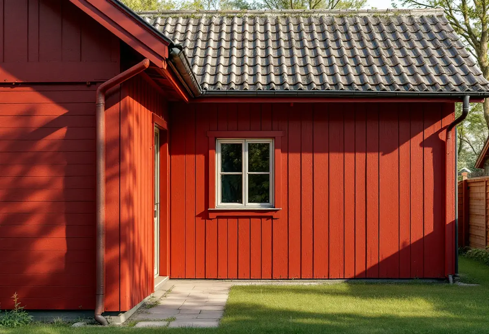

Klassificering och avtal
Vi kontrollerar Stadsmuseets karta, detaljplanen och om huset står på tomträtt.
Gamla Enskede byggdes på små tomter som staden upplät med tomträtt, och redan 1908 skulle ritningar för en större ombyggnad godkännas av staden. I dag är det plan- och bygglagen och riksintresset som sätter ramarna, men tomternas storlek är densamma. Geal Entreprenad AB bygger till hus i Enskede som total entreprenad och lämnar ett skriftligt kostnadsförslag efter ett gratis platsbesök.

Enligt Stadsmuseets byggnadsinventering av Gamla Enskede innehöll tomträttskontraktet, som gällde i 60 år, bestämmelser om hur tomten fick bebyggas. Byggnadsrätten angavs i kontraktet, tomten fick bara användas för bostadsändamål och uthus fick inte uppföras. Boningshuset skulle ligga minst tre meter från gatulinjen.
Kontraktet krävde också att ritning och arbetsbeskrivning för nybyggnad och större ombyggnad skulle godkännas av staden, och att träd inte fick fällas utan stadens medgivande. Byggandet började sommaren 1908, och enligt inventeringen var större delen av det första stadsplaneområdet färdigbyggt 1913.
Inventeringen från 1970-talet konstaterade att de små tomterna, upplåtna med tomträtt, inte gav något utrymme för ny bebyggelse. Är ditt hus upplåtet med tomträtt i dag är det därför klokt att läsa avtalet innan en tillbyggnad ritas.

Stockholms stads vägledning för småhusområden pekar ut Gamla Enskede som riksintresse för kulturmiljövården, tillsammans med bland annat Pungpinan och Olovslund. Staden skriver att det därmed är av nationellt intresse att bevara området och att det har ett starkt lagskydd. Gamla Enskede var stadens första trädgårdsstad, anlagd efter Per Olof Hallmans stadsplan från 1908, och den mest kända typritningen är den så kallade Enskedestugan.
En lovfri tillbyggnad gäller inte för särskilt värdefulla byggnader och områden (PBL 9 kap. 37 §). Stockholms stad hänvisar till Stadsmuseets klassificeringskarta för en första indikation, och ibland behöver museet göra en bedömning. I Gamla Enskede ska du alltså räkna med att bygglov kan krävas även för en liten tillbyggnad.
Huvuddelen av husen i trädgårdsstäderna var enligt vägledningen friliggande enfamiljshus i ett plan med delvis inredd vind, men även radhus och parhus förekom. I ett parhus delar två ägare på samma huskropp, och en tillbyggnad på ena halvan syns på hela huset. Det är ett skäl att prata med grannen tidigt, även när den andra halvan inte berörs av själva bygget.
Redan 1970-talets inventering varnade för att om- och tillbyggnader förryckte skala och proportion, inte minst i områdena med typhus. Den beskrev samtidigt hur husägare började återställa husen, med ny träpanel av samma typ i stället för eternit och med ursprungliga fönster som fick sitta kvar.
Stadens vägledning för trädgårdsstaden säger att tillbyggnader, takkupor och terrasser i första hand ska göras mot trädgårdssidan och att husens ursprungliga volym, proportioner och takformer ska vara utgångspunkten. I Gamla Enskede och Äppelviken beskriver vägledningen ett nationalromantiskt drag med branta takfall och fönster med småspröjsade rutor, och det är de dragen en tillbyggnad behöver förhålla sig till.
Ska taket på huset ses över samtidigt beskriver vi hur äldre tegel tas tillvara under takrenovering i Enskede, och om fasaden behöver göras om, se fasadrenovering i Enskede.
Enskedefältet räknas i stadens vägledning som småstugeområde, och där är råden lite annorlunda. Kvarteren är enhetliga, och i småstugeområdena har förändringarna genom åren enligt vägledningen huvudsakligen gjorts mot trädgårdssidan. Ett exempel i vägledningen visar en tillbyggnad med lägre nock än huvudbyggnaden och takfoten på samma nivå.
Utanför de särskilt värdefulla miljöerna gäller den lovfria potten: högst 30 kvadratmeter sammanlagt, inte över nocken och minst 4,5 meter till gräns eller grannarnas skriftliga medgivande. Enligt Stockholms stad räknas tidigare lovfria tillägg som attefallstillbyggnader och skärmtak in. Påverkas bärande konstruktion eller brandskydd, eller installeras eldstad eller vatten och avlopp, krävs anmälan och startbesked.
Vi kontrollerar Stadsmuseets karta, detaljplanen och om huset står på tomträtt.
Huset, den lilla tomten, avstånd till gräns och takets höjder mäts upp.
Ett förslag mot trädgården som följer typhusets proportioner.
I riksintresset tas underlag för bygglov fram, annars medgivanden och anmälan.
Ett skriftligt förslag med varje del för sig.
Vi bygger med hänsyn till trädgården och går igenom resultatet med dig.
Skatteverket godkänner rotavdrag för en tillbyggnad av ett småhus om tillbyggnaden sitter ihop med husets yttervägg till minst 75 procent av en sida eller har en dörr mot huset. Större delen av den ursprungliga stommen ska behållas.
Avdraget är 30 procent av arbetskostnaden, högst 50 000 kr per person och år, och kräver att du äger bostaden när arbetet görs. Geal drar det direkt på fakturan.
Om bygglov krävs i riksintresset, hur mycket plats det finns för etablering på en liten tomt, hur tillbyggnaden anpassas till typhusets material och takform, anslutningen mot det gamla taket och vilka installationer som ska in. Efter ett gratis platsbesök får du ett skriftligt kostnadsförslag.
Mer boyta i samma hus.
Tillbyggnad →Takbyte, takbesiktning och plåtarbeten.
Takläggare i Enskede →Trädgårdsstad med lertegel.
Takrenovering i Enskede →Typhus i trä, träbjälklag och bostadsrätt.
Badrumsrenovering i Enskede →Trähus, putsade typhus och småstugor i Enskede.
Fasadrenovering i Enskede →Typhus, dubbelhus och småstugor.
Köksrenovering i Enskede →Trädgårdsstad, egnahem och småstugor i Enskede.
Målare i Enskede →